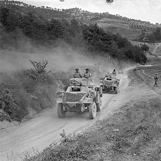
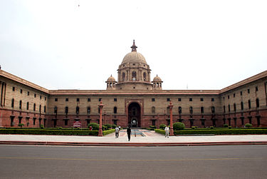

The Defence forces of India.
The Government of India is responsible for ensuring the defence of India and every part thereof. The Supreme Command of the Armed Forces vests in the President. The responsibility for national defence rests with the Cabinet.
This is discharged through the Ministry of Defence, which provides the policy framework and wherewithal to the Armed Forces to discharge their responsibilities in the context of the defence of the country.The Raksha Mantri (Defence Minister) is the head of the Ministry of Defence.

Humber armoured cars of 10th Indian Division move forward in Italy, 22 July 1944.
South Block in New Delhi is the headquarters of the Ministry of Defence.

The National Defence Academy (NDA) at Pune
About
The Indian Armed Forces are the military forces of the Republic of India. It consists of three professional uniformed services: the Indian Army, Indian Navy, and Indian Air Force.
Additionally, the Indian Armed Forces are supported by the Indian Coast Guard and paramilitary organisations (Assam Rifles, and Special Frontier Force) and various inter-service commands and institutions such as the Strategic Forces Command, the Andaman and Nicobar Command and the Integrated Defence Staff.
Additionally, the Indian Armed Forces are supported by the Indian Coast Guard and paramilitary organisations (Assam Rifles, and Special Frontier Force) and various inter-service commands and institutions such as the Strategic Forces Command, the Andaman and Nicobar Command and the Integrated Defence Staff.
The President of India is the Supreme Commander of the Indian Armed Forces.
The Indian Armed Forces are under the management of the Ministry of Defence (MoD) of the Government of India. With strength of over 1.4 million active personnel, it is the world's second-largest military force and has the world's largest volunteer army. It also has the third-largest defence budget in the world. As per 2015 Credit Suisse report, the Indian Armed Forces is the world's fifth-most powerful military, whereas the 2020 GlobalFirepower report lists it as the fourth most-powerful military.
The Indian Armed Forces are under the management of the Ministry of Defence (MoD) of the Government of India. With strength of over 1.4 million active personnel, it is the world's second-largest military force and has the world's largest volunteer army. It also has the third-largest defence budget in the world. As per 2015 Credit Suisse report, the Indian Armed Forces is the world's fifth-most powerful military, whereas the 2020 GlobalFirepower report lists it as the fourth most-powerful military.
It is important to note that the Central Armed Police Forces, which are referred to as 'Paramilitary Forces' based on a colonial perspective, are not armed forces. As such they are headed by civilian officers from the Indian Police Service and are under the control of the Ministry of Home Affairs, not the Ministry of Defence. These are central police organisations.
The Indian armed forces have been engaged in a number of major military operations, including: the Indo-Pakistani wars of 1947, 1965 and 1971, the Portuguese-Indian War, the Sino-Indian War, the 1967 Chola incident, the 1987 Sino-Indian skirmish, the Kargil War, and the Siachen conflict among others.
India honours its armed forces and military personnel annually on Armed Forces Flag Day, 7 December.
Since 1962, the IAF has maintained close military relations with Russia, including cooperative development of programmes such as the Fifth Generation Fighter Aircraft (FGFA) and the Multirole Transport Aircraft (MTA). Armed with the nuclear triad, the Indian armed forces are steadily undergoing modernisation, with investments in areas such as futuristic soldier systems and missile defence systems.
Since 1962, the IAF has maintained close military relations with Russia, including cooperative development of programmes such as the Fifth Generation Fighter Aircraft (FGFA) and the Multirole Transport Aircraft (MTA). Armed with the nuclear triad, the Indian armed forces are steadily undergoing modernisation, with investments in areas such as futuristic soldier systems and missile defence systems.